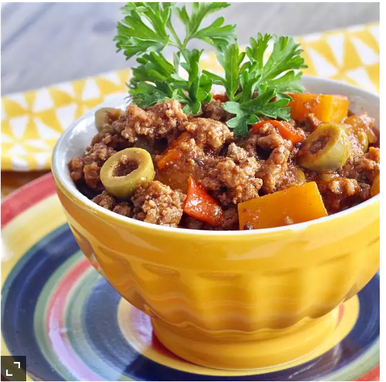

Abuelas Picadillo
This is my grandmother's Cuban picadillo (ground beef hash/chili) recipe which is usually served with white rice, beans and plantains. Picadillo also goes great with mashed potatoes and can be made without the squash. This dish is a favorite at home so I usually make 2 pounds to have leftovers for making empanadas (meat pies) the next day. Picadillo also freezes well. Of course my kids say this is the best picadillo they've ever had and I have to agree!

Ingredients
- 2 pound lean ground beef
- cup olive oil
- onion chopped
- green bell pepper, chopped
Cooking Directions
- Cook and stir ground beef in a large stockpot until browned, 5 to 10 minutes. Drain grease.
- Heat olive oil in small skillet over medium heat. Add onion, green bell pepper, and garlic; cook and stir until fragrant, 2 to 3 minutes. Stir into beef in the stockpot.
- Pour tomato sauce, water, cooking wine, and hot sauce into the stockpot. Stir in sazon seasoning, parsley, garlic powder, onion powder, cumin, pepper, and bay leaf. Bring to a boil; reduce heat to low and simmer picadillo, uncovered, until slightly thickened, about 10 minutes.
- Split olives in half with your fingers and stir into the picadillo. Add squash. Simmer until liquid reduces but picadillo is not dry, 45 to 60 minutes. Season with salt.
Link to original recipe